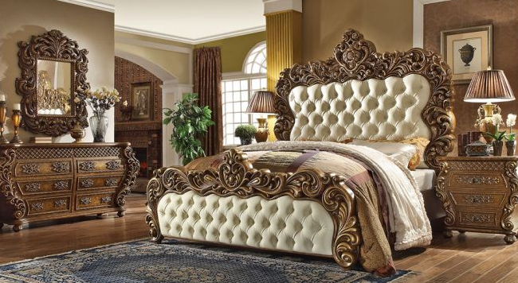
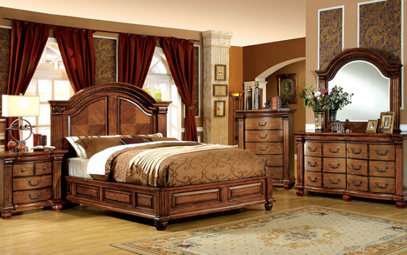

Items for Folks to Consider when Purchasing Bedroom Furniture
There are several distinct facets which people will need to take under account when buying furniture. The further research people do to the merchandise they will purchase, the more happier they will be using the items which they select. Among the principal factors people must consider is the total amount of money they've budgeted for buying furniture.
Individuals must think about the purchase price of the individual bits they are buying. Sometimes people make the mistake of spending a great deal on single products. Overspending on particular pieces could be problematic particularly if an person is hoping to remain out of particular budget. غرف نوم مودرن Obviously people are more inclined to devote a great deal of cash to get a master bedroom place and much less about a guest bedroom.
Folks might also wish to take into consideration the sort of substance the agencies or beds are created using. The décor at the home is going to have a whole lot to do with the choice procedure for bedroom accommodations. Sometimes people prefer to work with cast iron product since they're choosing a rustic appearance. Other people are considering wooden goods since might last longer.

Shopping in a number of places is very important so people are able to find the best possible thing. Nearly all people normally shop at furniture shops when they're buying these sorts of items. Throughout the past several years people are becoming more comfortable searching and performing research on the Internet for all these products. When folks are picking the various room furniture, then they need to consider the characteristic of substance that's utilized to assemble the products. Folks often times attempt to conserve money by buying furniture which isn't made of genuine wood and wind up needing to replace it quite fast since these things don't survive.
If people will shop online they'll have to look into the standing of the business at which they will be buying the products. Verifying they are going to have easy access to receiving the pieces delivered can be tremendously important. Most people should be certain the bedroom they buy will last them a few decades.
Useful Tips When Purchasing Bedroom Furniture
Purchasing bedroom furniture might seem simple, but this action has the prospect of inducing strain to the buyer. Bedroom furniture is regarded among the most indispensable things in our houses. We spend nearly eight to ten hours and more spans within our bedrooms.
It's crucial to take under account some essential factors prior to making any purchase of bedroom furniture to make sure items are the ideal ones. Following are a few tips for buying bedroom furniture.
Understand what you want. - When purchasing bedroom furniture it's vital that people all know what we truly require. It's an established actuality that furniture is generally expensive and would have a massive chunk of their funding. Thuswe shouldn't be buying something that people simply want but instead consider what're more desired. With nearly all costs of products rising and the market changing, being thrifty and prudent would indicate a good deal. There's not any need to invest on the most expensive or modern bedroom furniture in case we can't afford it. This could lead us into another aspect to think about which the cost of the furniture.

Price counts. - Once deciding what you want to buy, the projected price to be allocated to the purchase has to be contemplated. This would be rather valuable for buyers so they can trim their decisions. Thus those that aren't in their projected budget should not be contained in their decisions . غرف نوم مودرن 2020 People tend spending a lot on things which in the conclusion they repent of buying due to waste of cash or they don't receive their money's value. Additionally, it must be recalled that less costly or very affordable furniture can be as lasting and satisfying since those that are costly.
Pick furniture made from durable and quality materials. - The fabric of the furniture is vital to contemplate because it might tell us if such thing could last more. As previously mentioned, furniture is generally expensive thus we'd need it to be more durable and can endure the test of time. It could be a waste of time, work and cash to modify furniture frequently.
Allow your personality show. - The furniture in our homes also needs to reflect our nature and reference. Though we shouldn't get something that's too trendy since it may be from fashion after a while and might require us to alter furniture , our taste and style might nevertheless be embodied throughout the colours and fabrics of this furniture.
Shop wisely. - Compare prices from assorted stores. Have a look at various types of fashions. Research from the Web. There are many possibilities about the best way best to save wisely.